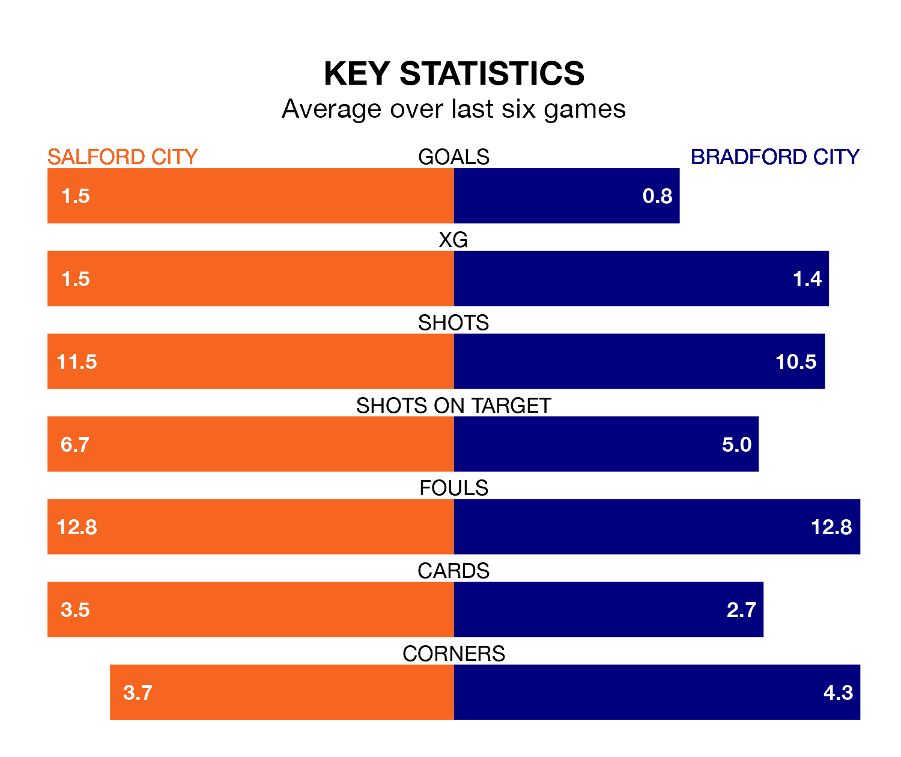

Salford City welcome Bradford City to the Peninsula Stadium on Saturday looking to pick up points to end their three-game losing streak.
Salford's struggles have left them with seven points from their last six EFL League Two matches, while their opponents have earned the same number from a possible 18.
In Matt Smith, Salford have one of the league's most on-form strikers so far this season. He has notched 23 goals in 43 appearances, to sit second in the scoring charts.
His goal rate of one every 146 minutes is quicker than that of Andy Cook, Bradford's top scorer with a goal every 206 minutes, and a total of 15 goals in 37 games.
In the last 10 years, Salford and Bradford have played each other on 10 occasions. Salford won five of them, Bradford three, and they drew twice.
On average, the Ammies scored 1.3 goals and the Bantams 0.8 in those matches.
Their last meeting was on January 23, when they played out a 1-1 draw.
Salford City are 20th in the table after 43 games, of which they have won 12 and drawn 11, earning 47 points.
Bradford City are six places ahead of the Ammies in 14th, with 15 wins and 12 draws putting them on 57 points.
With 50 goals in 42 games so far this season, the Bantams are the league's third-lowest scorers with 1.2 goals per game. But they are conceding fewer than average too, letting in 54 goals at a rate of 1.3 per game.
The home side are also below average scorers, with 1.4 goals per game, compared to a league average of 1.5. They have conceded 1.8 goals per game.
Salford's last match was on April 6, a 1-0 loss against AFC Wimbledon.
Bradford beat Gillingham 1-0 last time out, also on April 6, with Brad Halliday on the scoresheet.
Saturday's match will be refereed by Jacob Miles, who has taken charge of nine EFL League Two games so far this season, issuing no red cards and booking 36 players. He has awarded two penalties.
The last Salford game Miles refereed was a 0-0 away draw with Barrow on October 28. He is yet to oversee a match featuring Bradford this season.
Updated: 10:01 (UTC), 12/04/24